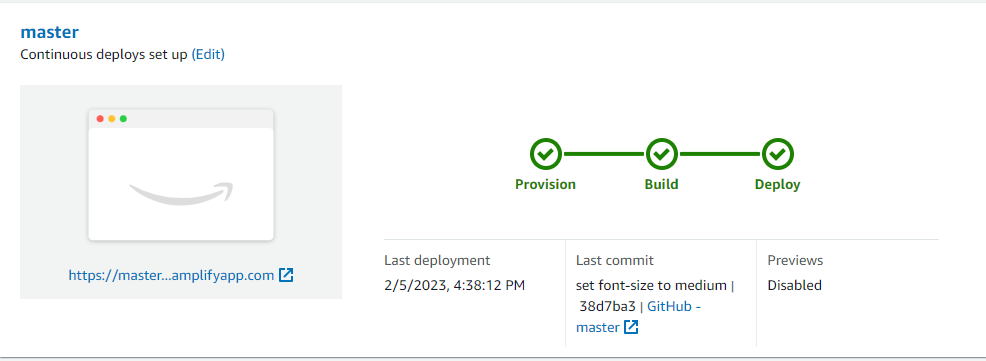

AWS Amplify
Zaid Alsaied Ahmad, Feb 7, 2023

AWS Amplify is a powerful tool for building scalable and secure applications, including static web pages. One of the great benefits of using Amplify is the ability to easily implement CI/CD (Continuous Integration and Continuous Deployment) for your projects. In this blog post, we will cover how to use AWS Amplify with GitHub to achieve this.
First, let's understand what CI/CD is. CI/CD is a software engineering practice that allows developers to continuously integrate code changes into a shared repository, and automatically deploy those changes to production environments. This speeds up the development process and reduces the risk of human error.
To get started with CI/CD for a static web page using AWS Amplify and GitHub, follow these steps:
- Create a GitHub repository for your static web page.
- Sign up for AWS Amplify if you haven’t already.
-
In the AWS Amplify Console, create a new Amplify App. You will need to provide the name of your app, the repository name, and the repository provider (GitHub).
-
Connect your GitHub account to AWS Amplify.
-
Choose the branch that you need to triger the build.
-
Allow AWS Amplify to automatically deploy, make sure you click the checkbox.
-
Build and deploy your website.
-
Wait for the build and the deploy.

-
Now you can access the website thorough the url.
- Now Every time you push changes to your GitHub repository, Amplify will automatically build and deploy your changes to the environment you selected.
And that's it! You have now successfully set up CI/CD for your static web page using AWS Amplify and GitHub. This will allow you to quickly and easily make changes to your static web page and have those changes automatically deployed to production.
In conclusion, using AWS Amplify and GitHub for CI/CD can greatly simplify the process of deploying your static web pages. By automating the build and deployment process, you can focus on developing and improving your application, rather than worrying about manual deployment tasks. Give it a try today and see how it can help streamline your workflow.